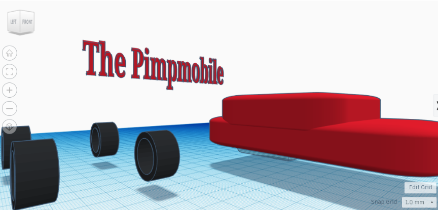
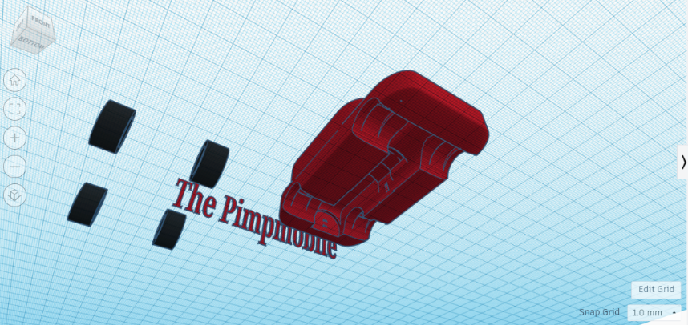
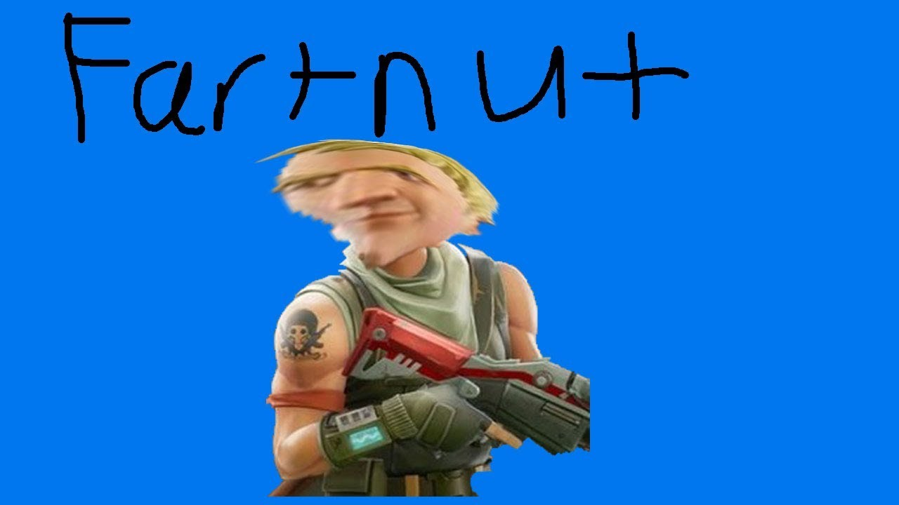

The Pimpmobile (But it can't move)
This project was personally one of the hardest projects I ever had to complete in my Computer Science class because I was very far behind and had been absent for most days of the week when it was first being introduced. However, I tried my best with the knowledge I had accumulated through several tutorials and classmates to create a somewhat car looking thing. I think with more time, knowledge, and effort, I would have been able to perfect it to my liking, but as it is right now, it isn't too bad. The main thing I learned in this project is how to increase the overall size of several objects at a time, keeping everything proportional in the process. This was helpful because it allowed me to have more space to add other objects to the vehicle and make it better looking. Clearly, I didn't get to far doing this. However, I did learn a lot of skills that I can apply to future projects we do with other websites like this.
 Ignore this one please.
